有职员表 emp，表结构如表－1所示：
表－1 职员表emp 信息
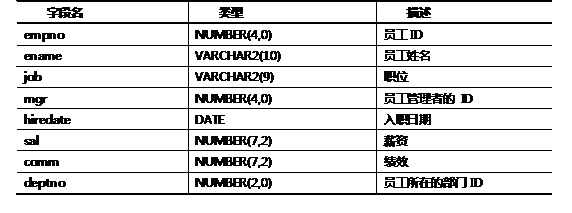emp 表中的示例数据如图－1所示：
图－1
有部门表 dept，表结构如表－2所示：
表－2 部门表 dept 信息
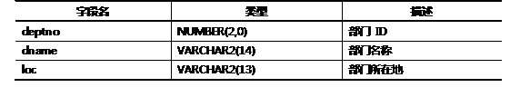dept表中的示例数据如图－2所示：
图－2
需要完成如下查询：
1、查询职员表中，在20和30号部门工作的员工姓名和部门号。
2、查询职员表中，没有管理者的员工姓名及职位，并按职位排序。
3、查询职员表中，有绩效的员工姓名、薪资和绩效，并按工资倒序排列。
4、查询职员表中，员工姓名的第三个字母是A的员工姓名。
5、查询职员表中的职员名字、职位、薪资，并显示为如图－3所示效果：
图－3
提示：列之间用逗号连接，列头显示成OUT_PUT。
6、查询职员表中员工号、姓名、工资，以及工资提高百分之20%后的结果。
7、查询员工的姓名和工资，条件限定为：工资必须大于1200，并对查询结果按入职时间进行排列，早入职排在前面，晚入职排在后面。
8、查询ACCOUNT部门以外的其他部门的编号、名称以及所在地。
对于如前所示的职员表 emp，需要完成如下查询：
1、查询每个部门中每个职位的最高薪水。
2、有SQL语句如下所示：
- SELECT a.ename, a.sal, a.deptno, b.maxsal
- FROM emp a,
- (SELECT deptno, max(sal) maxsal
- FROM emp
- GROUP BY deptno) b
- WHERE a.deptno = b.deptno
- AND a. sal < b.maxsal;
此 SQL 语句的功能是什么？写出其查询结果。
3、假设员工表中，员工和管理者中间只有一个层级，也就是说，每个员工最多只有一个上级，作为管理者的员工不再有上级管理者，并且，上级管理者相同的员工，他们属于同一个部门。找出EMP 中那些工资高于他们所在部门的管理者工资的员工。
4、找出EMP 中那些工资高于他们所在部门普通员工平均工资的员工。
1、下列 SQL语句出错的原因是（）。
- SELECT classid,AVG(MONTHS_BETWEEN(SYSDATE,entertime))
- FROM student
- WHERE AVG( MONTHS_BETWEEN (SYSDATE, entertime))>12
- GROUP BYclassid
- ORDER BY AVG(MONTHS_BETWEEN (SYSDATE, entertime));
A) select短语中不能出现组函数。
B) where短语中不能限制分组结果。
C) order by子句中不能包含组函数。
D) 组函数中不能包含单行函数。
2、有学员表Student，该表的结构如表－3所示：
表- 3 学员表 Student 信息
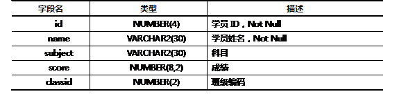编写 SQL 语句，查询每班中每个科目的最高成绩。
3、针对表－3所示的 Student 表，执行下述SQL语句：
- 1) SELECT a.name, a.score, a.classid, b.avgscore
- 2) FROM studenta,
- 3) (SELECT classid, avg(score) avgscore
- 4) FROM student
- 5) GROUP BY classid)b
- 6) WHERE a.classid = b.classid
- 7) AND a.score> b. avgscore;
关于运行结果，下列描述正确的是（）。
A) 第一行出现错误
B) 第三行出现错误
C) 第六行出现错误
D) 语句正常执行
1、有职员表emp，若需列出所有薪水高于平均薪水值的员工信息，则有 SQL语句如下：
- SELECT ename, job FROM emp WHERE sal > avg(sal);
上述语句是否正确？如果有错，写出正确的SQL语句。
2、有学员分数表，如图－5所示：
图－5
编写一条SQL 语句，查询出每门课都大于80 分的学生姓名。
3、有USERLIST 表如图－6所示：
图－6
有 CHAEGE 表如图－7所示：
图－7
请用最少的SQL 语句，产生如表－4所示的查询结果：
表－4 查询结果
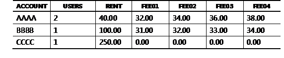其中，数据是经过USERLIST、CHAEGE 表进行合适的连接，并以ACCOUNT 字段为关键字分组求和得到。
特别注意：电话号码421004 在USERLIST 表中有一条记录，在CHARGE 表中并没有记录。但是，在查询结果中，合同CCCC 具有一条记录。
4、有两个表emp和taxgrade，其字段分别为：
emp（员工）表: empname，empno，sal
taxgrade（税别）表： taxmin，taxmax，grade
上述字段中，除字段empname外，其他字段均为数值类型。
emp 表的数据如表－5所示：
表－5 emp表示例数据
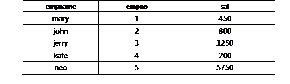taxgrade 表的数据如表－6所示：
表－6 taxgrade表示例数据
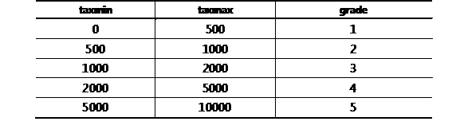编写SQL语句，查询编号为1的员工的税别。
5、有学员表 student，用于记录：学号，姓名，性别，年龄，组织部门；有课程表course，用于记录：课程编号，课程名称；还有选课表 sc，用于记录：学号，课程编号，成绩。三表的结构以及关联如图－8所示：
图－8
完成如下要求的 SQL 语句：
1)写一个SQL语句，查询选修了’计算机原理’的学生学号和姓名
2)写一个SQL语句，查询’周星驰’同学选修了的课程名字
6、有表test ，表结构如表－7所示：
表－7 test表
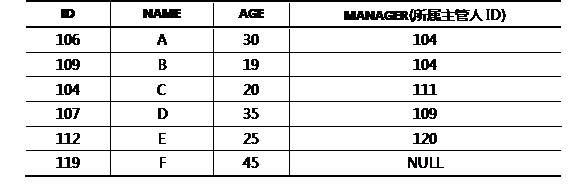编写 SQL 语句，查询所有年龄比所属主管年龄大的人的ID和 NAME。
7、有表 city 记载城市信息，如表－8所示：
表－8 city表
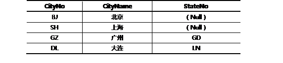有表 state，记载省份信息，如表－9所示：
表－9 state表
欲得到如表－10所示的查询结果：
表－10 查询结果
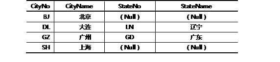请编写相应的SQL语句。
有科目表，记载学员的学习科目数据，如表－11所示：
表－11 t_subject表（科目表）
有学员表，记载学员的信息，如表－12所示：
表－12 t_student表（学员表）
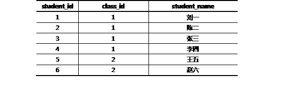有考核规则表，记载考核规则，如表－13所示：
表－13 t_assess_rule表（考核规则表）
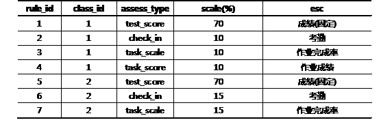有学员成绩表，如表－14所示（注，各科的成绩计算方法根据考核规则中占有的比率计算）：
表－14t_performance表（成绩表）
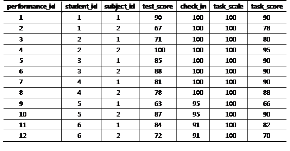1、如何算出一班(class_id=1)每个学生各科的成绩？
2、请对一班(class_id=1)每个学生各科成绩的总分进行排序。